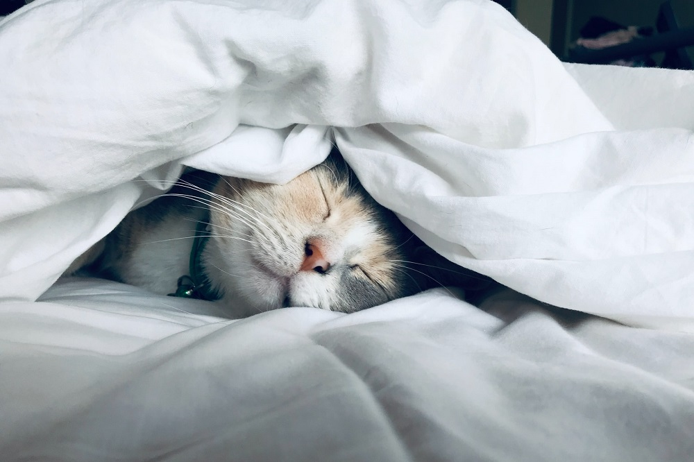

Worms

When a cat has bladder worms it is known as Capillariasis. The bladder worm is described as a small hair-like worm. The worms either fasten themselves in the renal pelvis of the kidney or into the bladder mucosa. A cat can become infected by eating earthworms or may have swallowed matter that has been contaminated with dead earthworms. Usually, cats that are infected are older than 8 months.
Symptoms of infection can be asymptomatic but having said that if a cat is heavily infected symptoms may include frequent urination, straining to urinate, blood in the urine. Identifying Capillaria eggs in the urine is how bladder worms are diagnosed. If a cat is asymptomatic then treatment is not recommended, however, there are medications that are recommenced if there has been a diagnoses and symptoms are present. Keeping your cat indoor can prevent your cat from catching bladder worms.